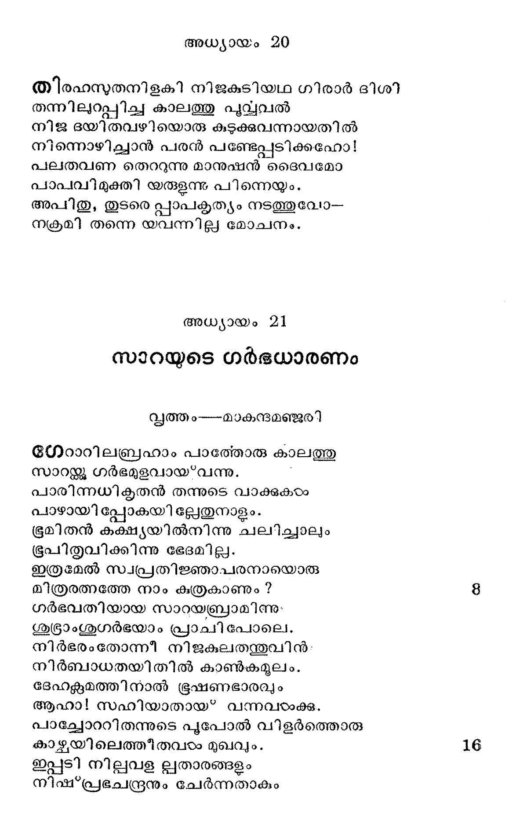
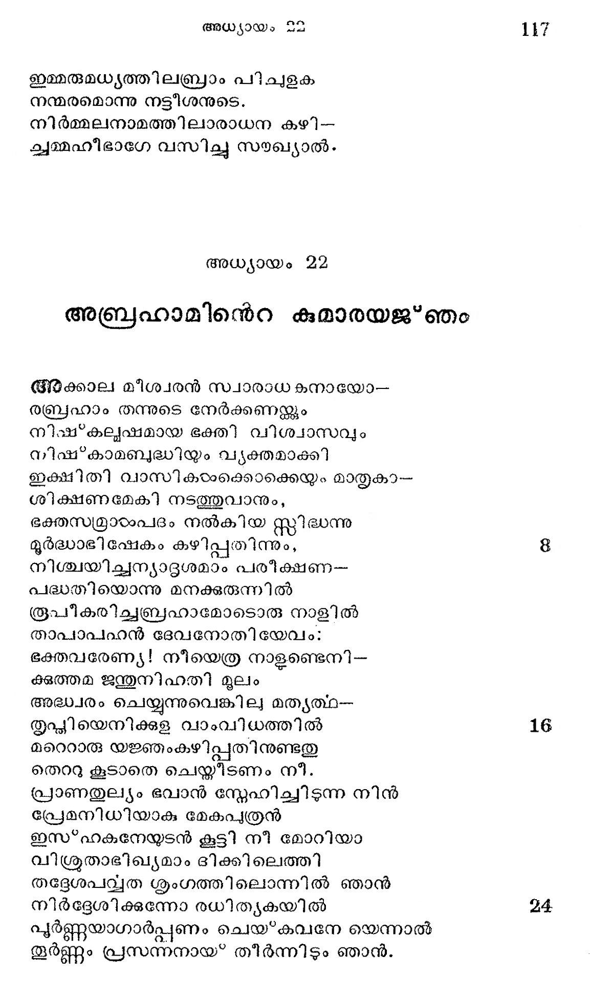

അധ്യായം 21
സാറയുടെ ഗര്ഭധാരണം
വൃത്തം---മാകന്ദമഞ്ജുരി
ധേഠാറിലബ്രഹാം പാത്തോരു കാലത്തു
സാറമ്ക്കു ഗര്ഭമുളവായ*വന്നു.
പാരിന്നധിക്ൃതന് തന്നുടെ വാക്കുകഠം
പാഴായി പ്പോകയി ല്േേതുനാളം.
ഭൂമിതന് കക്ഷ്യയില്നിന്നു ചലിച്ചാലും
ഭൂപിതൃവിക്കിന്നു ഭേദമില്ല.
ഇത്രമേല് സ്വപ്രതിജ്ഞാപരനായൊരു
മീത്രരത്നത്തേ നാം കുത്രകാണും?
ഗര്ഭവതിയായ സാറയബ്രാമിന്നു;
ശുഭ്രാംശൂഗര്ഭയാം പ്രാചി പോലെ.
നിര്ഭരംതോന്നീ നിജകുലതന്തുവിന്-
നിര്ബാധതയിതിൽല് കാൺകമുലം.
ദേഹക്സമത്തിനാല് ഭൂഷണഭാരല്ം
ആഹാ! സഹിയാതായ* വന്നവടാക്കു.
പാച്ചോററിതന്നുടെ പുപോല് വിളര്ത്തൊരു
കാഴ്ചയിലെത്തീതവാഠം മുഖവും.
ഇപ്പടി നില്വവള ല്പതാരങ്ങളും
നിഷ്*പ്രഭചന്ദ്രനും ചേര്ന്നതാകും

മിക്കവാറും വെളപ്പായൊരു ശവ്വരി-
ക്കൊപ്പമായ് ലക്ഷിതയായി മിന്നി.
ദെൌഷഘൃദം വര്ദ്ധിച്ചു വന്നീടും തോറുമേ
ദൌഹൃദമുണ്ടായീ നാരിയാടാക്കും.
എന്തെല്ലാം വേണമോ സാധിപ്പാനായവ
സ്വാന്തമോടദം പൂണ്ടു നിന്നബ്രഹാം.
ഇച്ഛുകളൊന്നുമേ ബാക്കി വയ്ക്കാതവ
നിശ്ചയം നല്കിനാ നാത്മഭര്ത്താ.
തന്നുടെ സന്തതി ഭൂമി ഭജിചി €--
മെന്നുള്ള വാസ്മവം കാട്ടവാനോ
ദോഹദവ്യാജേന മണ്ണു തിന്നീടിനായം
സാഹസശീലയാടം സാറ താനും.
അതുൃന്ത പീനന്യനങ്ങളിന്ചുണ്ടുകരം
ഷാഠംപ്പദ ലീനനളിന കോശം
വിഭ്ൂരമിച്ചാനതി ചെയ്യുമാറാര്ന്നിതു
നല്ലൊഴുകീടുന്ന നീലിമയേ.
സ്വര്ണ്ണ നിറമാണ്ട ശാലിക്ക തുല്യമായ”
വര്ണ്ണ വി ശേഷമവാഠംക്കുദിച്ചു.
നിരണ്ണയം ഗര്ഭഗതനാം ശിശുവിനന്െറ
പൂര്ണ്ണമാം കാന്തി പരന്നപോലെ.
ദാഹവും മോഹവും ദേഹത്തളര്ചയ--
മാഹാരത്തിങ്കല് വിരക്തി മററും
സാറയജ്ക്ങ്ങുണ്ടായിതെങ്കില മൊക്കെ നി-
സ്ത്മാരമായെണ്ണ്ണിയ പത്യതര്ഷാല്.
ഉള്ളില് നിധിയള്ള ഭൂമിയെപ്പോലെയും
വെള്ളമുത്തന്തര്ഭവിച്ചതാകും.,
നല്ലനിറമണ്ട ശുക്തിയെപ്പോലെയും
ഉള്ളില്ത്തീയേലും ശമി പോലെയും
എണ്ണിനാന് സത്വസഹിതയായുള്ളൊരു
കന്നല് മിഴിയാളെ യബ്രഹാമന്.
ഗര്ഭം വളരവെ ഭക്തി വളര്ന്നവന്
സ്വര്ഭഗവാന് തന്െറ സന്നിധിയില്
നിര്ഭരമത്ഥിച്ചു നിതൃവും നിന്നു ത-
്൬൪ഭക രക്ഷണപ്രാത്ഥിയായി.
പൂര്ണ്ണമാം കാലത്തു സാറാ പ്രസവിച്ചു
സ്വര്ണ്ണനിറമേന്തും സൂനുവിനെ
കണ്ണമധരമായുള്ള കരച്ചിലാല്
തൂണ്ണമറിഞ്ഞു ജനന മബ്രാം.
ഇയററില്ലം തന്നിലെ ദ്രീപത്തിന് ശോഭയേ
മുററും ജയിക്കുന്ന ദേഹകാന്തി
പെററുള്ള പൈതലിൽ കാണ്കയാലീശനേ--
യറാമില്ലാതെ വണങ്ങി മാതാ.
സവ്വജഗല്പതേ! സവ്വേശ്വരാ! ൭മ
ഭുത്ലാരദുടഃഖം ശമിപ്പിക്ഷകവാന്
നില്യാപണം ചെയ്യൊരി ഗ്ലീശൂവിന്നായ* ഞാന്
ഗവ്വഹീനം നിന്നെ വാഴ*ത്തിടുന്നേന്
ഉവീയേ നാസ്ത്ിതയില് നിന്നുയര്ത്തി നീ -
യര്ല്ലരയാക്കിയ വര്ത്തമാനം
നിധിവാദം മമ ബോദ്ധ്യമായ* വന്നതെന്
ഭുയ്വിധി നീങ്ങിയ മാത്രയില് താന്.
സാറാ ശിശുക്കഠംക്കു സൂന്യമരുളുമെ
ന്നാരാനുമുണ്ടോ പറഞ്ഞുകേടംപ്പൂ?
ദുഃ$ഖസംവിഗ്നയാ മളി നീ
സുസ്മിത മേകിയതെന്തു ചിത്രം!
എന് സൂതിവ്ൃത്തം ശ്രവിക്കവോരേവരും
മന്യേ ചിരിയ്ക്കാതിരിക്കയില്ല.
അബ്രഹാമിന്നുടെ വാര്ദ്ധക്യവേളയി -
ലിപ്പത്തി നൂതയാ യെന്തു ചിത്രം!
ഇങ്ങിനെ ചൊന്നവടം ദൈവസവിധത്തില്
തിങ്ങിന മോദാല് നമസ്കരിച്ചു.
അബ്രഹാ മാനന്ദവാരിധിയില് മുങ്ങി
ചവി ല്പ്പുരുഷന് കൃപാവൈഭവത്തെ
അല്ലേതരം വാഴ*ത്തി യശ്രുക്കളോടു.തന്
കെലപള്ള പാദം പ്രണിപതിച്ചു.
തന്നുടെ നൂറാം വയസ്സില് പിറന്നൊരീ
ചിന്ന ശിശുവിന്നു ഹാസ മര്ത്ഥം
കൊള്ളന്നൊരിസ*ഹാക്കെന്നാഖ്ൃയയരുളിനാ-
നുള്ളിലേ വിസ*മയോട്ദീപനത്താല്.
പൈതല് ജനിച്ചെട്ട വാസരം ചെന്നപ്പോടം
ഛേദനാചാരം നടത്തി താതന്.
ന്യന്യപാനം ശിശു തീരെ വെടിയുമോ-
രന്നാളൊരുത്സവമാക്കി യബ്രാം.
അമ്മഹം മൂലം തനിക്കുളവായൊരു
സമ്മദം പ്രത്യക്ഷ മാക്കീടുവാന്
വന്തരമായ വിരുന്നൊ ന്തൊരുക്കി നി-
മന്ത്രിച്ച സര്വജനങ്ങളേയും.
എന്തൊരു കേമമാം സദൃയെന്നേവരു-൦
മന്തരാശ്വര്യം കലരുംവണ്ണം
തെലും ധനലോപമില്ലാതെ സാധന-
മെല്ലാം കരുതിയിരുന്നു ദാരന്.
സാധുക്കടം വന്നത്ര ഭക്ഷിച്ചു ഭക്തന്െറ
ഭാതൃത്വം വാഴത്തി ത്തിരിച്ചു പോയി.
ക്ഷീണരെത്താങ്ങുന്ന കൈകംടംക്കു കാതര്യം
കാണില്ല കാണിയും ക്ഷോണി തന്നില്.
യിസ*്ഹാക്കിന്െറ ഒശൈശവം
പ്രത്യഹം ബാലന് വളര്ന്നിതു ശുക്ടമാം--
പക്ഷത്തിലുള്ളൊരു സോമനെപ്പോല്.
മാതാപിതാക്കയാക്കു കണ്ണിന്നളുതഃയം,
മന്ദിരത്തിൽ മണി ദീപമായും,
മാറുശിശുക്കഠംക്കൊരുററ സഖിയായും,
മുറുമീ ബാലന് തെളിഞ്ഞു മിന്നി.
ഭന്തമുകളങഞ്ങഠം കാട്ടിസ്മിതം രൂക്--
മന്തരത്തിങ്കല മസ*ഫുടമാം
വര്ണ്ണങ്ങളില് നല്ല വാക്കരയന്ക്കുമ്പൊഴും,
ഭൂര്ണ്ണം മടിയില് ക്കരേറിവന്നു
അംഗത്തിലെങ്ങുമണിഞ്ഞ രേണക്കള--
ആഅംഗത്തിലങ്ങിങ്ങായ* തൂകുമ്പോഴും,
താതജനനിമാര്ക്കള്ളിലുണ്ടാമൊരു
മോദമുരയ*പതിന്നാവതല്ലേ.
ഓമല് ശിശുവിനെ കാലൊന്നിടറമെ
ഓടിയണയുന്നു സാറ ശീഘ്രം
പാചകജോലിയിലേര്പ്പെട്ടിരീക്കമ്പോടം
ബാലനേ യഛനു നല്*കി വീണ്ടും
ആഗമിച്ചീടുംവരന്ക്കു സുക്ഷിക്കണ --
മേവമുളറിയേ പോകയുള്ള.
തയമഭ്ധ്യേ വല്ല കരച്ചിലും കേട്ടതായ*
പെണ്മണിക്കള്ളത്തില് തോണിടുകില്
ഓടിയെത്തും ഭര്ത്തൃശാസനത്തിന്നവഠം
കൂടുമൊരര്ഭകവാത്സല്യത്താല്.
അബ്രഹാമിന്നുടെ നൂക്ഷ്മക്കകവിനാല്
അപ്ലപൈതല് കുത്രാപി വാണു കേണാൽല്
ഇപ്പരി ചോതിടും സാറായാരം സങ്കട-
മല്മടക്കാനശക്തയായി :
എന്തൊരു ചിത്തമോ! കള്ലകൊണ്ടോ? ഭവല്--
സ്വാന്തമുരുവായിരിപ്പതയ്യോ!
കുഞ്ഞിനെ നോക്കാന് കഴിയാത്ത നിങ്ങരംക്ക
കുഞ്ഞു കിട്ടാഞ്ഞതു കുറാമാണോ?
കിഞ്ചന നൂക്ഷ്യവുമില്ലാതെ മഞ്ചത്തില്
തുഞ്ചിയാല് പ്പോരെന്നറിഞ്ഞി ടേണം.
എത്രപേരുണ്ടു കൊതിച്ചൊരു കൊച്ചുകാല്
പാര്ക്കുവാന് കാത്തിരിക്കുന്നിവിടോഃ,
സല്ലേശകാരുണ്യംകൊണ്ടു കിടച്ചൊരീ
ചാവ്വംഗനേ നോക്കാന് ശ്രദ്ധയില്ലേ?
കുഞ്ഞുങ്ങളില്ലാതിരുന്നാലുളളാപത്ത--
റിഞ്ഞതില്ലേ നൂറു ചെന്ന മേലം?
ഇവ്വിധം ഗെൌഴരവശബ്ദത്തിലോതിടും
വിമ്മിക്കരയ്ും പൊടുന്നനവേ.
പുത്രപ്രിയതയാ ലെത്രവഴക്കുകാം
വസ്കത്യത്തിലുണ്ടാക്കീ നായി കയാരം.
രാത്രിയില് നിദ്രയൊഴിഞ്ഞു ശിശൂവിനന്െറ
വക്രതാരവിന്ദവും ചേഷ്യകളം
നോക്കി നെടുനേര മാനന്ദിക്കും; കളി--
വാക്കരച്ചഗ്രേ കളിക്കും തന്വി.
മാതാവു തന് മുതുകേറി യുഷ്മത്തിന്െറ
മീതേ ജനകന് കരേറിടുന്ന
രീതിയെക്കാണിക്കും നേരമബ്രാമിനെ
മാടി വിളിച്ചതു കാട്ടുമവരം.
അഗഴ്രേശയിക്കുമൊരബ്രഹാമിക്ക,തി
വ്യഗ്രനായീക്ഷി ചകതളിരിന്
പക്വസമ്മോദം ലഘുതരചേഷ്യയാല്
വ്ൃക്തപ്പെടുത്താന് മടിച്ചു തന്െറ
പാണികടം കൂപ്പി രഹസ്തസില് സവ്യേശനേ--
താണുവണങ്ങി സ്കൃതിച്ചുകൊള്ളം .
ഈശാഭദൃപഗതനാ യൊരിബ്ബാലകന്
നൈശതമസി ഗൃഹത്തില് വെച്ച
പേശലമായ മണിവിളക്കെന്നപോല്
ക്ലശാന്ധകാരത്തെ ദൂരെ മാററി.
വസ്ത്യത്തിലുള്ളോര്ക്ക മോദമുളവാക്കി
ഭൂതയയ്്കും പുത്രനും മാത്രമെന്റെ.
ഇസ*ഹാക്കിനുണ്ടായ പീഡ
ഹാഗര് നിജനുതനബ്രഹാമിന്നുടെ-
യേകാവകാശിയെ ന്നോര്ത്തിരിക്കെ
സാറയാം പന്തി സവിച്ചുളവായൊരി
സ്ത്ര നുവിലേററം ഭയം കലര്ന്നു.
സാക്ഷാ ലവകാശി യള്ളപ്പോളെങ്ങിനെ
നൂുക്ഷ്ഠഭായാദനാം ഭൂത്യാപുത്രന് ?
വണ്ടു കുടിക്കേണ്ട പുഷ?പരസമൊരു
ഞണ്ടു കൊതിക്കുകില് ലഭ്യമാമോ ?
എന്നതു കാരണം ഹാഗറും പുത്രനും
ശൂന്യസന്തോഷരായ്*ത്തീര്ന്നതെന്നെയ
ഭാവിചരിതവിചാരപരമ്പര--
യാവുന്ന പേമഴ പെയ്തമൂലം
നാലുപാടുമൊലിച്ചത്യന്ത നീചത--
യേലം വികടമനക്കിണററില്
വീണുതിള കൊള്ള മീര്ഷ്യയാം കര്ട്ദമ--
ശ്രേണിയാല് കല*മഷചിത്തനായി
സുസ*മിതാഭിഖ്യനേ കൊഞ്ഞനം കാട്ടുക,
ഘസ*മരനെന്നു ഹസിച്ചുരയ്ക്ക,
കയ്യിലിരിക്കുന്ന ക്രീഡാപദാത്ഥങ്ങഠം
പയ്യവെ വാങ്ങിയെറിഞ്ഞു കൊടംക,
സ്വാടെഴും ഭോജ്യമെന്നോതി മണ്ധുളികയം
സോദരന് വായിലിടുക, യഗ്നി
ഖേലനവന്്മവാണെന്നു ധരിപ്പിച്ച
ജ്വാലയിലംഗലി ചേര്ത്തു വയ്ക്കു,
പദ്ധതി തന്നില് കുഴിച്ചി ലയാല് മൂടി
വിദ്രവിപ്പിക്കതിന് മീതിലൂടെ,
ഇത്തര മെത്രയോ തിന്മകളിഷ്”*മയേ_.
ലിസ്റ്റഹാക്കിന്നു നേര്ചെയ്ത കഷ്ടം!
സാറയീ വാര്ത്തകടം തെല്ലറിയുന്നേര--
മാറുപോല് കണ്ണുനീര് വീഴ്ത്തി വേഗം
കൂറുകേടുള്ളൊരു വാക്കരള്ക്കും, വെറും
താറുമാറാക്കും കുടുംബസഖ്യം.
ഭാര്യമാര് തങ്ങളില് പുത്രവാത്സല്യത്താ-
ലാര്യര്ക്കയോഗ്യമായ്ള്ള മട്ടിൽ
പ്രത്യഹ മോരോരോ 'പ്്യാസിയദഭ്ധം? മുറ--
യ്കൃതൃന്ത ഘോരമായ ചെയ്തി ടമ്പോടരം
ഗേഹാധിനായക നബ്രഹാം സന്ധിക്കു
മോഹിച്ചുരച്ചവ നിഷ്ഫലമായ.
അബ്രാം സ്വക്ൃത്യവിമുഡതയാര്ന്നതാല്
വിഭ്രമ ബുദ്ധിയാം സാറയോതി?:
ദാസീസുതനെ സമാതൃകനായി നി--
വാസത്തില്നിന്നു ബഹിഷ*കരിന്ന്റ്റു.
മാമകപുത്രനാ മിസ*ഹാക്കുമായ* സഹ-
ദായാദനായവന് പാര്ത്തുകൂടാ.
വള്ഭ യോതിന വാക്കുകഠം കേട്ടപ്പോ--
ഉല്ലല ബ്രാമിന്നധികമായി.
നീരസഹേതുവിരിക്കിലും പുത്രനെ
ഭൂരീകരിക്കുമേറ താതനോക്കില് ?
പുര്രവിയോഗവ്യഥപോലിബ'ഭൂമിയി--
ലദ്ദാമദുഃഖം മറൈറാന്നുമില്ല.
വിട്ടിലേ ശഞ്ണയും സാറയിന് വാക്കിന്െറ
നൈഷ്ഠ,രൃവും പുത്രവാത്സല്യവും
ഒന്നായ് ഹൃദയത്തില് ചേര്ന്നവാറബ്രഹാം
ഖിന്നനായ* ഭിന്നവികാരങ്ങളാല്
സ്രോതസ്വിനി സരസ്വാനോട യോജിക്കും
സ്ഥാനത്തൊഴുക്കം തരംഗങ്ങളും
ചീറിപ്പരസ്കരം ഘട്ടനം ചെയ്യുന്ന
വീറൊടുകൂടി ഹൃദയദ്ൃറ്നം
ഭേദിക്കുമാറു മനോഗതത്തിന്നല
മോതിയടിച്ചലച്ചുചചുകൈസ്റ്റായ*.
ഇഷഃ്മഭയല് ബഹിഷ്കരണ നിദേശം
ഇബ'*ഭീകരാക്രമം പ്രത്യപനോടദിപ്പാന്
കെല്ലില്ലയാതെ നിന്നബ്രഹാമന്.
അപ്പോളഖിലേശ നല്ലത്തിനാശങ്ങ--
ളലവവുമില്യാത്ത നിതൃമൂര്ത്തി,
വര്ത്തമാനംഭൂതഭാവികളൊക്കെ സു-
വ്ൃക്തമറിയുന്ന ദിവ്യനേത്രന്,
ഓതിനാന്: അബ്രഹാം! ലേശം മടിക്കേണ്ട
ആഭരിച്ചാലും നീ സാരവാക്യം.
ഭൂത്ൃയയ്ം പുത്രനും പോകട്ടെ സന്തതി
ഇസ*ഹാക്കില്നിന്നു നിനക്കളവാം.
ദാസീതനയനെ നിന് സുതനാകയാല്
പോഷിതവംശമായ്ത്തീര്ത്തീടും ഞാന്.
ഇങ്ങനെ ചൊന്നു പരേശന് മറഞ്ഞപ്പോഠം
തിങ്ങിന കൂരിതര്ഠംക്കേശഭാരം
എഏങ്ങുമഴിച്ചു വിതിര്ത്തു പരത്തി നി-
ശാംഗനയാകുന്ന ദേവതയാടം
ഇന്ദുവാം ചന്ദനപ്പൊട്ട തൊട്ട താരാ--
വൃന്ദവിരാജിത റൌക്കപൂണ്ടും,
കൂമനിനാദമാം ശംഖസ്വനത്തോടും.
കൂടണയുന്നതിന്നായ* ത്വരിക്കും
വാജിഗണത്തിന് ചിറകടിയാം ഡക്കാ-
വ്ൃയാദരുചിീര രവത്തോടുമേ,
വന്നുജഗത്താകും രംഗത്തില് നത്തനം
കരിന്നസന്ദേഹം തുടങ്ങിതപ്പോഴം
ധര്മ്മവ്യസനിയാ മബ്രഹാമിന്നിശി--
യെണ്ടടങ്ങാമയയുക്തനായി.
വീടുകരംതോറും കൊളത്തിയ ദീപത്താ--
ലോടിയൊളിച്ചിരുളാകെയി പ്പോടം
ടീറാസുതനുടെ യള്ളില്ക്കടന്ന പോ--
ടലറിത്തദീയഹൃദന്ധകാരം.
ആഹാരം വേണ്ടപോലാഹരിച്ചില്ലവ-
നാരോടുമൊന്നും പറഞ്ഞുമില്ല.
ബാലരേ മുന്പില് വിളിച്ചതില്ല, കൊടും-
മാലിനാലംമുറി വിട്ടതില്ല
പിറേറ ദഭിനമുണ്ടാം ഗംഭീരസംഭവം
മുററുംനിനച്ചു വിഷണ്ണനായി
തന്നോടുതന്നേ താ൯ താഴെവരുംവിധം
ഖിന്നതയോടഭര ച്ബ്രഹാമന്?:
എങ്ങിനെ ഞാനെനന്െറ ഇഷ്*മയേല്ക്കുട്ടി യേ--
യമ്മയ്യമായി പ്പറഞ്ഞയപ്പൂ ?
ഒററ മുഖംപോലം പാരത്തുകൊടംവാനെനി -
കുകററതനയരാില്ലാതിരിക്കെ
പൊറ പ്രഥമസുതനെ ഭവനത്തിന്
മുററത്തുപോല മിറക്കീടുവാന്
സമ്മതിയാത്ത ഞാനങ്ങ് നെയിക്രൂര--
കര്മ്മമനുഷ്ഠിച്ച നിന്നുകൊടംവൂൃ !
ഒന്നിച്ചൊരേദിനം മാത്രമേ പാര്ത്തുള്ള--
വെന്നിരുന്നാലും നിജവധുവേ
നന്ദിയില്ലാവിധം ദുരക്കളായ്വാ-
നുന്നുവോരില്ല കഠിനമല്ലോ.
അലുതുപോകട്ടെ വല്ലവിധത്തിലും
തൊള്ള നിറയ്ക്കുവാന് മാറ്റമല്ല
ഉണ്ടായിരുന്നിവക്കെ ജിലിവന്ഗത-
കുണ്ഠിതനായിടാമായിരുന്നു.
ഭര്ത്തുവിയുക്തയായ സത്മരഹിതയായ*
കൃത്യനൈപുണ്യ മില്ലാത്തൊരിവരം
പുത്രബഭക്ഷാപരിശാന്തി ക്കേതൊരു
പദ്ധതി തേടിക്ക താത്ഥയാവൂ ?
ന്റേഹരത്ംവച്ചു സുക്ഷിച്ച സംപുടം
വേഗമെടുത്തുടച്ചീടുവാനായ*
ഹാ ഹാ! പുരുഷനു സാദ്ധ്യമോ? നന്ദികേ--
ടാകാ മനുഷ്യനു തെല്ലപോലും.
ഒട്ടനാടം സ്നേഹിക്ക, പിന്നെ വെറുക്കുക,
വിട്ടവിട്ടംസ്ഥിതി ഭിന്നമാക
കഷ്ടമി ഭൃര്ഗ്ഗൂണം മര്ത്ത്ൃരിലല്ലാതെ
കാട്ടമുഗങ്ങളില് പോലുമില്ല
ആലി ംഗനംചെയ്യ കയ്യിനാലെങ്ങിനെ
പാലഞ്ചും വാണി യേത്തളളിടും ഞാന് ?
നാലഞ്ചു നാരംകൂടി ആലോചിചങലാതെ
മാലേറുമിത്തൊഴില് ചെയ്യവല്ലേന്.
ദുഃഖനി മഗ്നനായിങ്ങനെ ചൊന്നപ്പോ--
ളയാക്കുരുന്നി ലൊരു ശബ്ദമുണ്ടായ*.
അബ്രഹാമേ! ഭവാന് ദൈവപ്പരതിജ്ഞയെ
വിസ*മരിച്ചത്ൃത്തസാഹസിയായ*
ഭാര്യാവചനത്താല് ഹാഗറെ കൈടകക്കാണ്ട--
കാരണമത്രെയിട്,൪൬ിദേശം
വന്ന,തതിനാൽല് നീ മുന്നേതുപോലവേ
കന്നല്മിഴിയുടെ വാക്കിനാല്താൻ
ഹാഗറേ ശീഘ്രം ബഹിഷ്കരിച്ചീടുക
വ്യാകുലം വേണ്ടതിനെള്ളളവും.
പത്നീഗിരത്തിനാല് വന്നോരു ദുര്ഘടം
പത്നീഗിരത്താലെ തീിരവേണം.
കര്ണ്ണസംപ്രാപുജലത്തെ യിറക്കുവാന്
കര്ണ്ണജലസ്രതി വേണ്ടതല്ലോ.
കാകോള ദോഷനിവാരണത്തിന്വഴി
കാകോളമെന്നേ വരി കയ്ള്ള.
പുരൂന്നും മാതാവാം ദാസിക്കും വേണ്ടൊരു
നിത്യവ്ൃത്തിക്കളള പദ്ധതിയെ
ഇത്രമേല് ചിന്തിച്ചീടുന്നതെന്തിന്നതി-
നിസ്വനും കൂടവെ സര്വ്വശക്തന്
വൃത്തീയരുളന്നു; ഭോജ്യവിഹീനരായ്
ക/ത്തവരെത്ര ചുരുക്കമോര്ത്താൽ
വാനവിരിവില് പറന്നു ചരിക്കുന്ന
വാജികരം മാനസമോഹാനനങ്ങരം
വാപമോ കര്ത്തനകര്മ്മമോ കൂടാതെ
വാണാംം കഴിക്കുന്നു പുഷ്മഠിയോടും.
ദേഹമെലിവെന്ന തെന്തെന്നറിയാതെ-
യീഹാ൯സാരം ചരിച്ചിടുന്നു.
ഉയററംപെരുത്ത തിമിംഗലത്തിന്നുമ--
ങ്ങേററം ചെറി യോരയിരജയ്ക്കുമെ
തീററി കൊടുക്കുന്നു മുക്തഹസ്മത്വമോ--
ടാററല് വിശപ്പ് നുളവാംവണ്ണം.
കാട്ടിലും നാട്ടിലും മേട്ടിലും തോട്ടിലും
കോട്ടംപെരുത്ത കടല്നടുക്കും
വിഷ്പപനായക നിവ്വിധ പാലനം
സ്പഷ്മികയംക്കൊക്കെ യരുളിടുന്നു.
ഇങ്ങിനെയെങ്കില് നീ ദൂരീകരിക്കുന്നോ--
രംഗനയും സുതനിഷ്മയേലും
എങ്ങിനെ വസ്ൃത്തി നടത്തുമെന്നുള്ളൊരു
തിങ്ങിന ദുഃഖം തൃജിക്കവേണ്ടേ?
വിട്ടകളയ്യവാന് കല്വിച്ചവന് തവ
മട്ടോൽമൊഴി യേയും പ്രതനേയും
കഷ്ടത കൂടാതെ കാത്തിടുമല്ലെങ്കില്
സ്രഷ്ടാവിന്നീദ്ദശം കല്ലിക്കുമോ?
കാരുണ്യവാരിധിയാകും പരനവ-
ക്കാരണ്യത്തിങ്കല മാലംബമാം.
ഇഗ്ഘോരമായ ബഹിഷ്കരണം നിന-
ക്കാഠംക്കാമ്പിലഗ്ന്യസ്രമെന്നപോലെ
തല*ക്കാലം തോന്നുന്നു വെങ്കിലും മംഗള--
വ്യല്വാദകമാകാമായതിയില്.
ഗ്രീഷമകാലത്തിലെ യൂഷ*മാവുകൊണ്ടിനുന്
നൂക്ഷ്യമാ മാദാനം ചെയ*വതല്ലം
സൌഖ്യവിരുദ്ധമാണെങ്കിലും വര്ഷര്ത്തു.
മുഖ്യ ഗുണങ്ങംം വരുത്തുന്നില്ലേ ?
കയ*പുരസം കലർന്നുള്ള ഫലങ്ങളി --
നിപ്പുതരുന്നു പരിണതിയില്
കൃഷഛര”*റപത്ഥ്യത്തിനു പിന്നിലിരിക്കുവ-
൫൭ുഛ*റിതമാകു മാരോഗ്യമല്ലോ.
ആയതുമൂലം പരമേശ്വരോക്തിയിന്
ഞായമനുസരിച്ചതൃഷസ്സില്
ജായയാം ഹാഗറെ പുത്രസമേതം സം-
സ്ല്യായത്തില്നിന്നു മയച്ചകൊടംക.
രണ്ടുപക്ഷത്തെയും നന്മ കരുതിത്താന്
വേണ്ടതു ചെയ്യുന്നു വിഷ്ടപേശന്.
ഉക്തികളീവിധം കേട്ടൊരു മാത്രയില്
ഭക്തിമാനബ്രഹാം ശാന്തഹ്ൃത്തായ*
നീറിപ്പുകഞ്ഞെരി ഞ്ഞോരു കരഠംക്കക--
മാറിത്തണുത്തുടന് കൃത്യബോധം
ഉള്ളിലുണ്ടായ* നിജഭാര്യയാം ഹാഗറോ-
ടുള്ളഴി ഞ്ഞോതിനാ നിപ്രകാരം:
മാനിനിമാര്മണേ! മാനമെന്നുള്ളതിീ--
മാനുജക്കൊക്കെയും വേണ്ടതത്രേ.
നീയും നീന് സ്വാമിനി താനും നിരന്തരം
നീടററശണ്ണ തുടരുന്നില്ലെ ?
അപ്രതീകാര്യമാ മിസ്റ്റമരം പര-
മസ്നമിപ്പിക്കവാന് വേണ്ട മാര്ഗ്ഗം:
ഇപ്പോഴിവന് ബല്ൃശ്രദ്ധയാ നോക്കീട്ട--
മുല്പന്നമായില്ലകതളിരില്.
ശാന്തവചനങ്ങളോതുവാനെന്നുടെ
കാന്തമാര് നിങ്ങടം പഠിച്ചതില്ല
എന്തു പറഞ്ഞാലും ഛത്രോപരിവീണു
ചിന്തും ജലംപോലേ യാകയുള്ള.
നിങ്ങളൊരുമിച്ചു താമസിച്ചാല് സ്നേഹ-
ഭംഗമല്യാതെയുണ്ടാകയില്ല.
ഭേകവും ഭോഗിയും യോജിക്കുമോ ? ബൃഹല്--
ഭാനുവും വെണ്ണയും ചേര്ന്നീടുമോ ?
എന്നതുമുൂലമെ ന്നാരാധ്യ നീശ്വരന്
ചൊന്നിതു തമ്മിൽ പിരിച്ചീടുവാന്.
ഇന്നിവാസം വിട്ട സുനുവോടും കൂടി
ക്കന്നല് മിഴിയാളെ! പോകേണം നീ.
ദ്വേഷ മിനിക്കുളവാകയാ ലല്ലിതു
ഭാഷിപ്പതെന്നു ധരിചിടേണം.
ദോഷരഹിതനാ മീശന് തിരുവടി
ദോഷപരിഹാരം വന്നീടുവാന്
മാറ്റ്ുമി തൊന്നാണരുളിയതാകയാല്
നിശ്ശുമിക്കേണം പുലരും മുമ്പെ
ആഷ*മദ്വിഷയമാ യിട്ടാസനുണ്ടായ
വഷ:മപ്രദാഹിയാം ദുഃഖവഹ്നി
ശാന്തമായീടും പടിന്റ്റ ഭവജ്ജീവ-
സന്ധാരണഭരമേററു ദേവന്.
ആകയാല് ബാലനേ ക്കൂട്ടിയുഷസ്ത്റിന് മുന്
പോകണം വീടുവിട്ടന്മതന്ദ്രം.
ഭോജന പാനങ്ങളീശനരുളിടും
സാധുജനപാലനല്ലോ ദൈവം.
അബ്രഹാമീവിധം ചൊന്നതിനൊന്നുമേ
ശുഭ്രാംഗിയത്തര മോതിയില്ല.
സാറയാം സ്വാമിനിയോടുമൊരുമിച്ചു
നീരസമായ* നിജ ജീവിതത്തെ
ശണ്ണയില് ദുര്വ്യയിക്കാതെ വല്ലേടവും
മണ്ടുവാന് വന്കൊതി പുൃണ്ടിരുന്നാടം.
എന്നതു കാരണമാണവടം മയനിയായ*
നിന്നതു വല്ലഭന് മുന്പിലപ്പോടം.
ഹാഗറുമായ്ള്ള ഭര്ത്തുസംഭാഷണം
ലേശം സഹിക്കാത്ത സാറയിതു
ഏതോ മറവില്നിന്നാകവെ കോടംക്കിലും
ചേതോവികാരമടക്കി യേവം
ഓതിനാരം: പംശ്ചലി തന്നൊടുക്കത്തെയ്
ഭാഷണവും തീര്ത്തുപോയിടട്ടേ.
ഉദര്ദ്ധ്വന് വലിക്കിലും ചിത്ത കാഠിന്യത്തെ
മുക്തി ചെയ്കില്യഹോ നാരിവര്ഗ്ഗം
ഇഷ് മയല് ബഹിഷ*കരണം
അബ്രഹാം തന് മനശ്ലാന്തിയ്ം തന്നുടെ
സപ്രഭമായ കുടുംബകവും
രണ്ടായ്ക്കിളരുന്ന രാത്രികാലം ബള്ള്ഥ-
കുണ്ഠമായ* മെല്ലവേ നീങ്ങി നീങ്ങി
അല്പാല്മായ വെളിച്ചം പരക്കയാല്
സപ്ലാഗശ്വസാമീപ്യ മുഹ്യമായി.
നല്ലപോല് നേരം വെളക്കുന്നതിന്നു മുന്--
പല്ല കുറയയിരുന്നിടുമ്പോടം
അന്ധസ്റ്രുമംഭഃകുതുവും കമനി തന്
സ്തന്ധക്തില് വച്ചുടനബ്രഹാമന്
പുര്രസമേതം പറഞ്ഞയച്ചീടിനാ--
നിത്രിലോകേശനി യോഗറുലം.
മങ്ങല് സമയത്തു ഭാര്യയായ* തീര്ന്നവംഠം
മങ്ങല് സമയത്തു പോക ഞായം.
എന്നിരുന്നാലുമീ വേര്പാടസഹ്യമായ*
തോന്നാതിരിക്കുക സാദ്ധ്യമാമോ ?
രാവി ലവടംക്കളവാകാതിരുന്ന മാ-
ലീവിഭാതത്തിലടിക്കയായി.
കണ്ണീര് പൊടിഞ്ഞിതു നേത്രയ്യഗളത്തി --
ലിന്ദീവരത്തില് ജലകണം പോൽ
വാര്ന്നു ഗണ്ഡങ്ങളിന് മീതെ യൊലിച്ചതു
കുന്നില് നിന്നോല മരുവി പോലെ.
അന്ത്യമായ* ഭര്ത്തു മുഖത്തു നോക്കീടിനാടം
ചിന്താവിവശമനസ്തയായി.
കാന്തമായ്ള്ള കടാക്ഷപാതങ്ങളാല്
കാമം വളര്ത്തിയ കാമിനിയാരം
കാകോളലിപ്യമാം ദൃഷ്ഷിയാല് തന്നക--
ക്കാതല് കരിക്കം കടുമ കാണ്കെ
കാഠിന്യ മേറുമ? ക്കര്മ്മമോത്തെത്രയും
കാതരചിത്തനായബ്രഹാമന്.
വാസാര്ഹ മെന്നത്ഥമേലും ഗിരാരിനും
വാസഗ്രഹത്തിനും യാത്ര ചൊല്ലി,
ഭാസ്വാനുദിപ്പതിന് മുന്നെഴും മയ്യലില്
ഭാസ്റ്റല്മുള്ള ചെറുവഴിയേ
പുത്രനോടൊന്നിച്ചു പ്രസ്ഥിതയായവ-
ഉദിഷ്ടസ്ഥാനമറിഞ്ഞിടാതെ.
അമ്മേ! എവിടെ നാം പോകുന്നുവെന്നുള്ള
നിര്മ്മായമാം പുരര്രചോദ്യപത്രം
യാത്രയാ മുഗ്രചരീക്ഷണശാലയിൽല്
ലബ്ദമായെങ്കിലും കള്ണുനീരാല്
പ്രത്ൃക്തി രേഖപ്പെടുത്തുകയാല് ജയ--
ലിസ്റ്റിലവരം പേരു കണ്ടതില്ല.
വീണ്ട്ടജനുയോഗിച്ചിടുന്ന ബാലന്നു
തൊണ്ടയിടറി ബദല് കൊടുത്തു:
കുഞ്ഞേ! വിമാതാവും ഞാനും പരസ്പരം
രഞ്ജനയില്ലാതെ പാര്ത്തുനിത്യം
ശണ്ണപിണയക്കുന്ന കാഴ്ചയാലത്ൃന്ത
കുണ്ഠതയുണ്ടായി ട്ടച്ഛനിന്നാരം
രണ്ടാളം തമ്മിൽ പിരിഞ്ഞു പാക്കേണമെ--
നനിണ്ടലോടോതി വിഷണ്ണചിത്തന്
ആയതുമുൂല മകന്നുപാര്ത്തീടുവാ-
നാണു നാം പോകുന്ന തിയ്യൂഷസ്്റില്.
ബാലകൻ ചോദൃമായ്': നമ്മഠാക്ക പാർക്കുവാ-
നാലയം താതനൊരുക്കുമെന്നോ?
ഹാഗര് പ്രതിവചി: ചങ്ങിനെയല്ല സ്വര്-
ല്ലോകേശനാം നിന് പിതാവിൻ ദൈവം
സാന൯ുകമ്പം നമുക്കാലയം നൽല്കുമെ--
നാണു പറഞ്ഞതെന്നോടു താതന്
പ്രത്യക്തിയീവിധം ചൊല്വവേ കണ്ണൂുക--
ളത്യല്ക്കടബാഷ*പപൂര്ണ്ണമായി
അന്ധത യമ്പുകമൂലം കുഴി യൊന്നില്
സന്താപമാംവിധം കാലിടറി,
ചിക്കെന്നു മാറിനടന്നുപോം വേളയില്
ഭാസ്തരന്താനും കിഴക്കുദിച്ചു.
പ്രഭാതവര്ണ്ണനം
അബ്രഹാ മാഗറെ സന്ത്യജിച്ചുളെളാരു
ദുഃഖകരമായ വത്തമാനം
കോടംക്കയാലാണു പതിവിലധികമായ*
വക്രതുത്തിലാരുണ്യം കാണ്മതെന്നു
ആര്ക്കുംവിധിക്കാം വിധത്തിലരുണിമ
ചേര്ത്തുവി?ളങ്ങി മിഹിരനപ്പോടം.
വന്തമസ്സാകെ യകന്നു രുചിപൂണ്ടു
സന്തോഷമായ ഷസ്റ്ലസിച്ചു.
ധ്വാന്തംനിമിത്തം മുകളിതമായൊരു
കാന്തകസുമവ്രജമുണര്ന്നു.
പുഞ്ചിരി പുണ്ടുഷസ്സന്ധ്യക്ക ഹാര്ടദ്ദമാ-
യഞ്ചി തസ്വാഗതമുച്ചരിച്ചു.
അങ്ങിങ്ങായ* നില്ക്കും ലിലിസുമങ്ങടഠം രൂചി--
രാംഗത്തില് ചിത്രപടങ്ങളേന്തി.
മപ്പോാശുകടം കുട്മളവ്യാജേന ദീപങ്ങ--
ളാശു കൊളത്തിയൊരുങ്ങിനിന്നു.
ശാദ്വലഭൂമികഠം പച്ചവിരിപ്പുകടം
വൃദ്ൃയമാംവണ്ണം വിരിച്ചൊരുക്കി.
അച്ഛജലമാണ്ട നിര്ത്ധരങ്ങടം ബഹു
സ്വച്ഛമുകരഗണം നിരത്തി.
ഖര്ജുരപത്രത്തില് തട്ടിയിരമ്പുന്ന
നിര്ജരമോഹനവേണുഗാനം
പയ്യെപ്പരത്തി പ്പരക്കെ വിഹരിച്ചു
പയ്യനാം മാരുതന് ഗാനവിദ്വാന്.
പാടത്തു പൊന്നിറം പൂണ്ടല്ലസിക്കുന്ന
പാകമാം ധാന്യസ്ബകമാകെ
ഭാസ്വാന് കൊടുത്തുള്ള പൊന്മാല കണ്ണബത്തില്
ചാര്ത്തിത്തുടങ്ങിതു നൃത്തകര്മ്മം.
മാരുതലോളിതമായ' തലയാട്ടി
ത്താളം പിടിക്കുന്നു ശാഖിയെല്ലാം
മുന്തിരിവല്പികടം സ്വര്ണ്ണപക്വങ്ങളെ
യേന്തിക്കളിക്കുന്നു വായ്യതന്നില്.
പക്ഷികളൊക്കെയും സഞ്ചാരസൌകര്യം
ദാക്ഷിണ്യപൂവ്വ മരുളിയോരു
പക്ഷഭേദാന്തകനാകു മുഷസ്സിനേ--
യക്ഷീണഭക്ത്യാദരങ്ങളോടെ
പാടിപ്പുകഴ*ത്തി സമാജങ്ങഠം ചേര്ന്നത്ര
രേഖപ്പെടുത്തുന്നു നന്ദിയെങ്ങും ,
ഹാഗറിന്െറ തത്വബോധം
യാമിനീയാത്രയ്ും വാസരവേലയും
തൂുമയില് കണ്ടൊരു ഹാഗറിപ്പോഠം
പ്രാണികടാക്കള്ള ദശാവി ശേഷങ്ങളെ
ചേണെഴും മട്ടിലറിഞ്ഞു കൊണ്ടാടം.
നക്ഷത്രചങ്*ക്തിയ്ം നല്ലൊരു ചന്ദ്രനു...
മിക്ഷപവാണിരുന്നെങ്കിലും ഹാ!
സുക്ഷയമാന്നു മറഞ്ഞുടനാകവേ
ചക്രവാളത്തിലടിഞ്ഞുപോയി.

സജ്വരമൂര്ത്തിയാം ഭാസ്ക്കരനിപ്പുക--
ലുജ്വലവാഴ നടത്തിയാലും
നിലിലിടറിയധഃപതിക്കും ദീവി
കെല്ലോട്യരും പുനശ്ച ചന്ദ്രന്.
ഇപ്പടി വിഷ്ടയപവാസികളേവരും
ദുരഭരദ്വന്ദ്വസമാഹതിയാല്
മാറിമറിഞ്ഞു മറയുന്നു ചക്രത്തിന്
നേമിപോല് മേലുകീഴായജസ്രം.
ഭുഃഖമൊരുദിനം പിന്നൊരുനാരം സുഖം
സ:ഖ്യമനന്തരം ദുഃഖം പിന്നെ
വ്യക്തമായി പ്പരിവര്ത്തനം ജീവിക്കു
ചക്രനേമിക്രമം വന്നുകൂടും.
എന്തിന്നു ഞാനിതില് സന്തപിച്ചുിടുന്നു ?
ഭന്തുക്കംക്കൊക്കെയ മീവിധംതാന്
ബന്ധമിതുകളില് സംഭവിക്കാതെയെ--
ന്നന്തരാത്മാവ വിളങ്ങീടടെ.
ഇങ്ങനെ യംഗന തന്മനക്കാമ്പിനു
മങ്ങിയ ശാന്തിയുദിച്ചനേരം
നല്ികവാണിയിന് ഭുഃഖമറിഞ്ഞപോല്
കെല്ലോടൊരു ശബ്ദമുണ്ടായ*വന്നു.
നല്ലാര്മണോ? തവ വാസമതില്നിന്നു
വല്പഭന് നിന്നെത്തുരത്തിയാലും
വല്ുായ*മ വന്നു ഭവിക്കുമോ പ്രാണികഠം--
ക്കല്ലല് തീര്ക്കുന്നവനല്ലേ ടൈവം ?
പാര്ക്കവാനില്ലിട് മെന്നോ നിനയ്ക്കുന്നു ?
പാര്പ്പില്ലാതാരാനുമുണ്ടോ ഭൂവില് ?
കൃത്രിമമായ മകൃത്രിമമായിട്ടും
വസ്ത്യങ്ങളണ്ടെല്ലാ ജീവികടംക്കും
തയ്യൂലം നിന്നുടെ വാസവുമീശനന്െറ
നന്മനസ്തിങ്കല് കുറിച്ചിരിക്കാം.
വിീസ്*തൃതമായിക്കിടക്കുമി ബ*ഭൂരതലം
ശത്രജനത്തില് ഞെരുക്കമെന്യേ
പാര്ക്കവാന് തക്ക വിശാലതയ്ുളളതെ--
ന്തോര്ക്കുക; ഹൃത്തിൽ നീ യാശ്വസിക്ക.
സ്വര്ണ്ണാംഗുലികളാല് ഭൂമിയെത്തൊട്ടുകൊന
ണ്ടണ്ണോജവല്പഭനിപ്രകാരം
ചൊന്നതു കേടുപോല് ടദുഃഖനിമഗ്നയാം
തനദിക്കതോന്നീ നിജമനസ്തില്.
സൂര്യനുദിച്ചു കുറ്റേേക്കിളര്ന്നിതു
ധൈര്യമായ* യാത്ര തുടര്ന്നുപോന്നാടം.
ബേര്ശേബയെന്ന മരുവില് നടന്നെത്തി
ക്കര്ശനമാം വെയിൽ കൊണ്ടനേരം
രണ്ടുപേരും തളര്ന്നപ്പവെള്ളങ്ങളേ
ക്കൊണ്ടു തളര്ച്ചയടക്കി പിന്നെ
ബാക്കിയാം ഭക്ഷണം തീരുവോളമവി' --
ടാക്കി നിവാസമതി ന്െറ ശേഷം
ആഹാരലോപത്താല് ദാസിയ്യം പുത്രനും
ഹാ ഹാ! വലയുവാനാരംഭിച്ചു.
ത്തഹാരടദൂര്ഭിക്ഷാം
കുട്ടികടം ക്ഷുത്തിനാല് പീഡിതരാവുകില്
പട്ടപോമുടംബ്ബലം തള്ളമാര്ക്കും.
പട്ടിണി താന് കിടന്നാലും തനയരേ--
യൂട്ടണമെന്നേ മനസ്സിലുള്ള.
ക്ഷൃത്തു സഹിയാഞ്ഞു വാവിട്ട കേഴുന്ന
പത്രനേ നോക്കിീജ്ജനനിഹൃത്തില്.
അത്യൃത്ഥ ദുഃഖം വഹിച്ചതു ബാഷ*പമായ*
നേത്രംവഴിക്കു പുറത്തൊഴുകി.
എന്മകനേ! തുടര്ന്നിങ്ങനെ നീ കര-
ഞ്ചെന്മനം ഭിന്നമാക്കുന്നതെന്തേ ?
ധര്മ്മനിധിയായ നമ്മുടെ തമ്പരാൻ
ശര്മ്മമരുളമെന്നാശ്വസിക്ക.
പ്രാണികഠംക്കൊക്കെയു മാഹാര മേകുന്ന
ത്രാണവിചക്ഷണന് സമവ്യശക്തന്.
ദീനരാം നമ്മഠാക്കു ഭോജനം നല്കുമെ--
നനമൊഴിഞ്ഞുറയന്കേണമേവം
മാതാവുരച്ചതു പുത്രഹൃദയത്തില്
സ്റ്റീതക്ഷ്ധയാല് ഫലിച്ചതില്ല
കുക്ഷിയില്നിന്നു ബഭക്ഷയെന്നുള്ളാശു--
ശുക്ഷണി കത്തിയെരിഞ്ഞു വീണ്ടും
യാത്ര വെയിലിവമൂലം ബഹു ക്ഷീണ-
ഗാത്രനായ്മള്ളൊരിബ്ദാലകനേ
വാട്ടി വാട്ടിക്കരിക്കൊള്ളി സമം നില-
ത്തിട്ട മയക്കി ഭയപ്രദമായ്.
കാഴ്ചയിതുകണ്ടു ഹാഗര് മുറയിട്ട
മുര്ഛിത പത്രനേ ക്കയ്യിലേന്തി
പച്ചയിലകളാല് പന്തല് രചിച്ചുള്ള
കൊച്ചുവനത്തിലെ വൃക്ഷകത്തിന്
പ്രച്ഛായമൊന്നില് കിടത്തി നിരാശയോ--
ടച്വാരുനാരിയകലെ വാങ്ങി
ഏകശരക്ഷേപദുരം സ്ഥിതി ചെയ്ത
പാകന് മരിപ്പതു കണ്ടിടുവാന്
വയ്യെനിക്കെന്നു പറഞ്ഞുകൊണ്ടായവരം
വയ്യകത്തില് നെടുനീളെ വീണു.
ഉച്ചവസ്വരത്തില് നിലവിളി കൂട്ടിനാഠം
കച്ചവാര്വേണി കുരരി പോലെ.
അമ്പരന്നീവിധം ഹാഗര സാകകഞണ്ചമാം
കുമ്പിയാപ്പീസില്നിന്നുമ്പര് നാട്ടില്
തമ്പുരാന് തനന്െറപേര്ക്കര്ജന്റായ്* വിട്ടൊരു
കമ്പിക്കു കിട്ടി ബദല്ക്ഷണത്തില്.
ദൈവനിയോജ്യരിലേകന് വിഹായസ്റ്റി--
ലാവിര്ഭവിച്ചു പറഞ്ഞിവണ്ണം:
ഹാഗറേ! വേണ്ടാ ഭയം നിനക്കര്ഭക--
ദേവനം ദേവന് ശ്രവിച്ച ദൈവാൽ
ബാലന് വിശപ്പിനാല് ചാകയില്ല പരി-
പാലിക്കും വേണ്ടതു നല്കി നാഥന്.
മേദിനിമേലിവന് തുംഗതരമായ
ജാതിപ്രഭവമായ* തീരുമല്ലോ.
ആകയാല് താങ്ങി യെഴുന്നേലിച്ചിടുക.
ശ്രീകരനായ കുമാരകനേ.
ഇത്ഥമമരവചനം ശ്രവിക്കവേ
മത്തേഭയാന തന് കണ്ണൂ രണ്ടും
വിസ്മയമായവിധത്തില് തെളികയാ-
ലുത്സമൊന്നുഗ്രമരുവി ലപ്പോഴം
കണ്ടകക്ഷേത്രത്തില് മാലികന് റോസപോല്
കണ്ടവളള്ളം കുളര്ത്തതിയായ്.
പെട്ടെന്നു ചെന്നു കുരുവില് ജലം നിറ-
ക്വിഷ്ടപ്രരന്നു കൊടുത്തു ഹാഗര്
വെള്ളംകുടിച്ചവനാശ്വസിച്ചപ്പുറ-൦
മുള്ള ഭക്ഷ്യാദിയുയം നല്കി നാഥന്.
തള്ളയോടൊന്നിച്ചു ധന്വാവില് പാര്ത്തവന്:
വില്ലാളിയായ*ത്തീര്ന്നു പ്രയഡതയില്.
കാലംകുറയക്കഴിഞ്ഞകതാരിലേ
മാലെല്ലാം നീങ്ങി മദമുദിക്കെ
മിസ്രയില്നിന്നൊരു നാരിയേ പ്പത്രന്നു
പതിയാന്കൊണ്ടു വന്നാത്തമോദം
വസ്ത്യത്തില് പാര്ത്തു സുഖിച്ചിരുന്നാടം. ചിരം
ഭര്ത്തുവിയുക്തയാം ഹാജിരയാരംം.
ക്ഷ്്രമാം ലുതയില്യിന്നു നെടുതായ
സുത്രങ്ങളണ്ടാകുംമട്ടിലമ്പോ!
ആരബരാദിയാം വംശങ്ങളിഷ*മയേല്
വീരനില്നിന്നു.പെരുകി ഭൂവില്.
ഗേറാര്സഖ്യം
അക്കാലമബ്രഹാം ഗേറാര്ന്റപനോടു
നിഷ*്കര്ഷയേറിയ സഖ്യമൊന്നു
ഫിക്കോലഭിഖ്യനാം രാജസേനാധിപന്
നില്ക്കവേ ചെയ്ത നൃപേച്ഛമൂലം
രാജാവുചൊന്നു: നീ ജായാവിഷയമായ
വൃയാജംപ്രയോഗിച്ചപോലെ മേലാല്
യാതൊന്നും ചെയ്യാതെ ഞങ്ങടം ദയ തവ
മേഭുരമായ് പ്രവര്ത്തിച്ചവണ്ണം
എന്നോടുന്ൈറ ജനപദത്തോടുമെ--
ന്നന്വയത്തോടും ഘ്ലണപെരുതായ?
കാണിക്കുമെന്നു പരമനാമം ചൊല്വി-
യാണയിടുക മടിചിടാതെ.
അബ്രഹാമുത്തരമോതിയതിന്നെനി-
ക്കല്പം മടിയില്ലയെങ്കിലും നിന്
ഭൂത്ൃയഗണമെനിക്കള്ള കിണറിനെ
ത്തട്ടിയെടുത്തതു നീതിതാനോ?
ഓതി നൃപതി: യിതാരുചെയ്യെന്നതു
ലേശമറിവില്ലെനിക്കു പാര്ത്താല്
എന്നേ ബ*ഭവാനറിയിച്ചതില്ലിക്കഥ-
യിന്നു പുതുതായറിഞ്ഞു ഞാനും.
എന്നിരിക്കെ ബ*ഭവനൊന്തൊരു കുററമാ--
ണെന്െറമേല് വജ്കുവാനുള്ളതിപ്പോടം ?
അത്ഥപതിയേവം ചൊന്നപോതബ്രഹാ--
മര്ദ്ധവാക്കിന്നു മിടയിടാതെ
ആടുകടം മാടുകളെന്നിവ ഭൂപതി-
ക്കാദരവോടുടന് നല്കി ശീലം.
പ്രസ്മതമായ വിവാദകൂപം ജവാല്
പ്രത്യര്പ്പണം ചെയ്ത രാജമൌലി
സത്യത്തിന് ലക്ഷ്യമാ യേഴുമേഷങ്ങളെ
പ്രത്യേകം ഭൂപതിക്കേകിയബ്രാം.
ഇങ്ങിനെ യാശ്രവം ചെയ്ത് പരസ്പരം
തുംഗമോദത്തൊടു പാര്ത്തിടുമ്പോടം
ആണയുടെ കിണറെന്നത്ഥമാകും ബേര്--
ഭശബയെന്നായീ മരുവിന് നാമം.
ഇമ്മരുമധ്യത്തിലബ്രാം പിച്ളക
നന്മരമൊന്നു നട്ടീശനുടെ.
നിര്മ്മലനാമത്തിലാരാധന കഴി -
ക്വമ്മഹീഭാഗേ വസിച്ചു സയഖ്യാല്-
